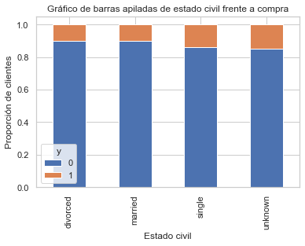
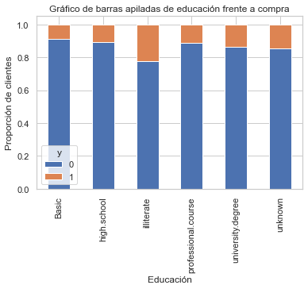
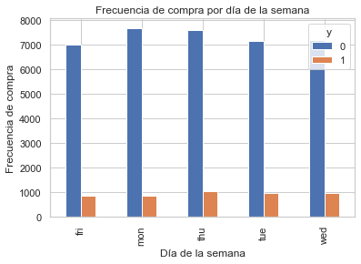
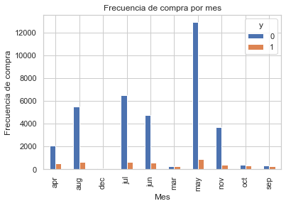

Logistic regression is a machine learning classification algorithm used to predict the probability of a categorical dependent variable. In logistic regression, the dependent variable is a binary variable that contains data coded as 1 for affirmative answer (yes), success, etc. and 0 for negative answer (no), failure, etc. Therefore a logistic regression model predicts P (Y = 1) as a function of X.
Logistic regression assumptions
Binary logistic regression requires that the dependent variable be binary.
For a binary regression, the factor 1 level of the dependent variable should represent the desired result.
Only significant variables should be included.
The independent variables must be independent of each other. That is, the model must have little or no multicollinearity.
The independent variables are linearly related to the logarithmic probabilities.
Logistic regression requires fairly large sample sizes.
Keeping the above assumptions in mind, let's make an excercise through a real life example.
We'll using dataset that comes from the UCI Machine Learning repository related to direct marketing campaigns (throgh phone calls) from a Portuguese banking institution.
The classification target is to predict whether the customers will subscribe, yes or not (1 or 0) to a long term deposit (Variable y).
First at all, do load the necessary python libraries.
Code:
import numpy as np
import statsmodels.api as sm
import pandas as pd
pd.options.display.float_format = '{:.4f}'.format
import seaborn as sns
sns.set(style="white")
sns.set(style="whitegrid", color_codes=True)
import matplotlib.pyplot as plt
plt.rc("font", size=14)
import warnings
warnings.filterwarnings('ignore')
from sklearn import preprocessing
from sklearn.linear_model import LogisticRegression
from sklearn.model_selection import train_test_split
from imblearn.over_sampling import SMOTE
from sklearn.feature_selection import RFE
from sklearn.linear_model import LogisticRegression
from sklearn.linear_model import LogisticRegression
from sklearn import metrics
from sklearn.metrics import confusion_matrix
from sklearn.metrics import classification_report
from sklearn.metrics import roc_auc_score
from sklearn.metrics import roc_curve
Do load the dataset, that you can get from my github repository following this link banking.csv.
Code:
data = pd.read_csv('banking.csv', header=0)
data = data.dropna()
Do dataset review using shape() python object property, this way can see the numbers of rows and columns (variables) inside dataset.
Code:
print(data.shape)
Output:
(41188, 21)
The dataset provides the bank's customer information, there are 41.188 rows and 21 columns in dataset. Do check columns names showing through a list
default: do you have credit in default? (categorical: "no", "yes", "unknown")
housing: do you have a home loan? (categorical: "no", "yes", "unknown")
loan: do you have a personal loan? (categorical: "no", "yes", "unknown")
contact: type of contact communication (categorical: "cell phone", "phone")
month: last contact month of the year (categorical: "jan", "feb", "mar", ..., "nov", "dec")
day_of_week: last contact day of the week (categorical: "Mon", "Tue", "Wed", "Thu", "Fri")
duration: duration of the last contact, in seconds (numeric).
Important note: this attribute greatly affects the output target (for example, if duration = 0, then y = "no"). The duration is not known before a call is made, furthermore, after the end of the call, it is obviously known and. Therefore, this entry should only be included for reference purposes and should be discarded if the intention is to have a realistic predictive model.
campaign: number of contacts made during this campaign and for this customer (numeric, includes the last contact)
pdays: number of days that passed after the customer was last contacted from a previous campaign (numeric; 999 means the customer was not contacted previously)
previous: number of contacts made before this campaign and for this customer (numeric)
poutcome: result of the previous marketing campaign (categorical: "failure", "non-existent", "success")
"y" will be the following question: Did customer make a long term deposit?. The answer will be binary: "1" will be mean "Yes", and "0" wil mean "No".
The education variable from dataset has many categories, it'll be necessary reduce these categories in order to build a better prediction modeling. The following categories, "basic.4y", "basic.9y" and "basic.6y" could be together, therefore they can be grouped and called "basic".
The bar chart shows a significant difference proportion between customers with no long term deposit inside this dataset. let's do a percentage review of them.
There are 11,27% of customers subscribed with long term deposit. Now, do calculate the mean for subscription and no subscription mean of all independent variables.
Code:
data.groupby('y').mean()
Output:
age
duration
campaign
pdays
previous
emp_var_rate
cons_price_idx
cons_conf_idx
euribor3m
nr_employed
y
0
39.9112
220.8448
2.6331
984.1139
0.1324
0.2489
93.6038
-40.5931
3.8115
5176.1666
1
40.9131
553.1912
2.0517
792.0356
0.4927
-1.2334
93.3544
-39.7898
2.1231
5095.1160
Let' make following observations:
The average customer age with long term deposit subscription is higher than that of the clients who did not.
The pdays (days since the customer was last contacted) are understandably lower for customers who are suscripbed. The lower the days, the better the memory of the last call and therefore the greater the chances of selling.
Surprisingly, the campaigns (number of contacts or calls made during the current campaign) are lower for customers with long term deposit subscription.
Now, do calculate categorical means for other categorical variables such as education, marital status, etc. to get a more detailed information from data.
The long term deposit subscription frequency is highly dependent of job title. Therefore, the job title can be a good predictor for the target variable (y).
Code:
table=pd.crosstab(data.marital,data.y)
table.div(table.sum(1).astype(float), axis=0).plot(kind='bar', stacked=True)
plt.title('Marital Status vs. Buy stacked bar chart')
plt.xlabel('Marital status')
plt.ylabel('Customers proportion')
plt.savefig('mariral_vs_pur_stack')
Output:

Previous chart shows the marital status does not appear to be a strong predictor for target variable.
Code:
table=pd.crosstab(data.education,data.y)
table.div(table.sum(1).astype(float), axis=0).plot(kind='bar', stacked=True)
plt.title('Education vs. Buy stacked bar chart')
plt.xlabel('Education')
plt.ylabel('Customers Proportion')
plt.savefig('edu_vs_pur_stack')
Output:

Previous chart shows the education does appear to be a strong predictor for target variable.
Code:
pd.crosstab(data.day_of_week,data.y).plot(kind='bar')
plt.title('Purchase frequency by day of the week')
plt.xlabel('Weekday')
plt.ylabel('Purchase frequency')
plt.savefig('pur_dayofweek_bar')
Output:

Previous chart shows the day of week does not appear to be a good predictor for target variable.
Code:
pd.crosstab(data.month,data.y).plot(kind='bar')
plt.title('Purchase frequency per month')
plt.xlabel('Month')
plt.ylabel('Purchase frequency')
plt.savefig('pur_fre_month_bar')
Output:

Previous chart shows the month could be a strong predictor for target variable.
Previous chart shows poutcome variable could be a strong predictor for target variable.
Dummy Variables
Now, do create dummy variables, these should be binary variable type for each variable representative analyzed previously.
Code:
cat_vars=['job','marital','education','default','housing',
'loan','contact','month','day_of_week','poutcome']
for var in cat_vars:
cat_list='var'+'_'+var
cat_list = pd.get_dummies(data[var], prefix=var)
data1=data.join(cat_list)
data=data1
Code:
cat_vars=['job','marital','education','default','housing',
'loan','contact','month','day_of_week','poutcome']
data_vars=data.columns.values.tolist()
to_keep=[i for i in data_vars if i not in cat_vars]
Oversampling using Synthetic Minority Oversampling Technique (SMOTE)
With training data created, Do sample the non long term deposit subscription using SMOTE technique. This technique works by creating synthetic samples of the minor class (the unsubscribed long term deposit) instead of creating copies, most be randomly choose of the k closest neighbors and use it to create a new one, similar but randomly modified observations. It works as following:
Code:
X = data_final.loc[:, data_final.columns != 'y']
y = data_final.loc[:, data_final.columns == 'y']
# Check the data values
print("Length of the over-sampled data is: ",len(os_data_X))
print("Number of unsubscribed in over-sampled data: ",len(os_data_y[os_data_y['y']==0]))
print("Number of subscriptions: ",len(os_data_y[os_data_y['y']==1]))
print("The proportion of unsubscribed data in over-sampled data is: ",len(os_data_y[os_data_y['y']==0])/len(os_data_X))
print("The ratio of subscription data to over-sampled data is: ",len(os_data_y[os_data_y['y']==1])/len(os_data_X))
Output:
Length of the over-sampled data is: 51134
Number of unsubscribed in over-sampled data: 25567
Number of subscriptions: 25567
Number of subscriptions: 0.5
The proportion of unsubscribed data in over-sampled data is: 0.5
Now we have perfectly balanced data! You may have noticed that I oversampled only on the training data, because by oversampling only on the training data, none of the information in the test data is used to create synthetic observations, therefore no information will be indented from the test data in the training model.
Recursive Feature Removal (RFE).
Is based on the idea of repeatedly building a model and choosing the best or worst performing feature, putting the feature aside and then repeating the process with the rest of the features. This process is applied until all the characteristics of the data set are exhausted. The goal of RFE is to select features by recursively considering smaller and smaller sets of features.
Code:
data_final_vars=data_final.columns.values.tolist()
y=['y']
X=[i for i in data_final_vars if i not in y]
logreg = LogisticRegression()
rfe = RFE(logreg, 20)
rfe = rfe.fit(os_data_X, os_data_y.values.ravel())
The matrix confusion shows 7020 + 6340 correct predictions and 1335 + 646 incorrect predictions. Now, do calculate precision.
The precision is the relation tp / (tp + fp) where tp is the number of true positives and fp the number of false positives. Accuracy is intuitively the ability of the classifier not to label a sample as positive if it's negative.
The recovery is the relation tp / (tp + fn) where tp is the number of true positives and fn the number of false negatives. Withdrawal is intuitively the classifier's ability to find all positive samples.
The F-beta score can be interpreted as a weighted harmonic mean of precision and recovery, where an F-beta score reaches its best value at 1 and its worst score at 0.
The F-beta score outweighs the recall than the precision by a factor of beta. beta = 1.0 means that memory and precision are equally important.
Support is the number of occurrences of each class in y_test.
Interpretation: Out of the entire test set, 87% of the advertised long term deposit was the subscription that customers like. therefore the 87% of the customers preferred long term deposits.
Now, do use the Receiver Operating Characteristic curve (ROC) is another common tool used with binary classifiers. The dotted line represents the ROC curve of a purely random classifier; a good classifier stays as far away from that line as possible (towards the upper left corner).